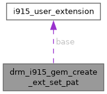

- Generated by
 1.15.0
1.15.0
|
XenevaOS
|
#include <i915_drm.h>

Public Attributes | |
| struct i915_user_extension | base |
| __u32 | pat_index |
| __u32 | rsvd |
struct drm_i915_gem_create_ext_set_pat - The I915_GEM_CREATE_EXT_SET_PAT extension.
If this extension is provided, the specified caching policy (PAT index) is applied to the buffer object.
Below is an example on how to create an object with specific caching policy:
.. code-block:: C
struct drm_i915_gem_create_ext_set_pat set_pat_ext = {
.base = { .name = I915_GEM_CREATE_EXT_SET_PAT },
.pat_index = 0,
};
struct drm_i915_gem_create_ext create_ext = {
.size = PAGE_SIZE,
.extensions = (uintptr_t)&set_pat_ext,
};
int err = ioctl(fd, DRM_IOCTL_I915_GEM_CREATE_EXT, &create_ext);
if (err) ...
| struct i915_user_extension drm_i915_gem_create_ext_set_pat::base |
@base: Extension link. See struct i915_user_extension.
| __u32 drm_i915_gem_create_ext_set_pat::pat_index |
@pat_index: PAT index to be set PAT index is a bit field in Page Table Entry to control caching behaviors for GPU accesses. The definition of PAT index is platform dependent and can be found in hardware specifications,
| __u32 drm_i915_gem_create_ext_set_pat::rsvd |
@rsvd: reserved for future use